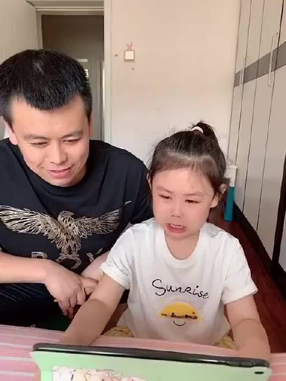

#不明所以#某个评论被我回复“滚”之后拉黑，偶然再撇到，发现还有三个人给他的评论点赞，即使要转到电脑微博上才能看到是谁点赞。我这么懒的人，也打开电脑，势必拉黑这几个给评论点赞的人。目光所视之处，见不到恶心的人，才是对自己负责的做法。
看到蔡康永对杨奇函的评价乐死我了“你明明是清华的硕士去过伦敦的访问学者，为什么透着江湖郎中的气息？”， “他满口诗词歌赋，你就感觉不到他有任何的文学气息。”，“穿着西装笔挺的，为什么还是望之不似人君？”//@Eileen_深海鱼: 卡姐才是忍辱负重@急诊科女超人于莺:感觉卡姐忍辱负重，前期投入巨大，获益一般，还搭上了陪睡，替网友带来了欢乐，是一股清流呢网恋被骗一百多万，是“瘦高幼白富美”为他设计的精准陷阱吗？
#姣姣#买辣条，每次也是只吃一根，一包吃很久，我偶然拿的时候被明俊看到，他就会叫喊：姣姣，你快点来吃你的辣条，不然都让你妈妈吃完了。//@landlord: 以前看过。再看还是笑//@史老柒:哈哈哈，这小棉袄@搞笑800:小女孩神吐槽被爸爸抢辣条吃，这口才随谁呀？ 搞笑800的微博视频  3万次播放 02:08
我闺女拎得清，我和她爹再怎么吵架，只要不波及到她，她就可以是看戏的态度，很无所谓。@shenwen52:看《婚姻的故事》，爹妈闹离婚，闹得心都要碎了，我看小孩好像也很无所谓的感觉。爹妈快崩溃的时候还只关心”可以给我读书吗？”。咳，小崽子们。就随便养养吧~~
想得开//@茜颖兰馨:我小时候爸妈要是闹别扭，他们就会各做各的饭，然后我两边都可以吃，甚是开心；他们要是赌气说离婚，我会乐开花的说，“你们真离婚了，我就会有两个爸爸妈妈，四份的零花钱”。@shenwen52:看《婚姻的故事》，爹妈闹离婚，闹得心都要碎了，我看小孩好像也很无所谓的感觉。爹妈快崩溃的时候还只关心”可以给我读书吗？”。咳，小崽子们。就随便养养吧~~
应对态度确实跟孩子的预期有关。//@潘俊勇EasyDo:两个人感情好，孩子对婚姻的美好一面会更有愿景，碰到问题也会有信心去想办法解决问题，我觉得。@shenwen52:看《婚姻的故事》，爹妈闹离婚，闹得心都要碎了，我看小孩好像也很无所谓的感觉。爹妈快崩溃的时候还只关心”可以给我读书吗？”。咳，小崽子们。就随便养养吧~~
#一个人的企业# 现在越来越觉得，做很多事事情，定性要在定量之前。比如投资买股票，定性就是这家公司是不是好，定量会考虑买多少以及价格。如果你买的是家烂公司，那你的定量做得再好，其实也可能会让你血本无归。公司找合伙人也是这样，其实人品优先级要高于能力。而这个经验我还积累得不够多，也许以后能实践得好些。但在婚姻上我还是有一些发言权的，因为老公是我征婚征来的嘛。我那个时候自信到，随便找个男的结婚，我都能过下去，而且过得不会太差。但在选择男性的时候有一条是死线，就是不能有大男子主义。不要有男权思想的人，这属于定性。这一条让我在感情和婚姻上避免了很多坑。
截图 查看图片 //@Dffffhsfwrwud:哇征婚这段求分享@Ada李力:#一个人的企业# 现在越来越觉得，做很多事事情，定性要在定量之前。比如投资买股票，定性就是这家公司是不是好，定量会考虑买多少以及价格。如果你买的是家烂公司，那你的定量做得再好，其实也可能会让你血本无归。公司找合伙人也是这样，其实人品优先级要高于能力。而这个经验我还积累得不够多，也许以后能实践得好些。但在婚姻上我还是有一些发言权的，因为老公是我征婚征来的嘛。我那个时候自信到，随便找个男的结婚，我都能过下去，而且过得不会太差。但在选择男性的时候有一条是死线，就是不能有大男子主义。不要有男权思想的人，这属于定性。这一条让我在感情和婚姻上避免了很多坑。